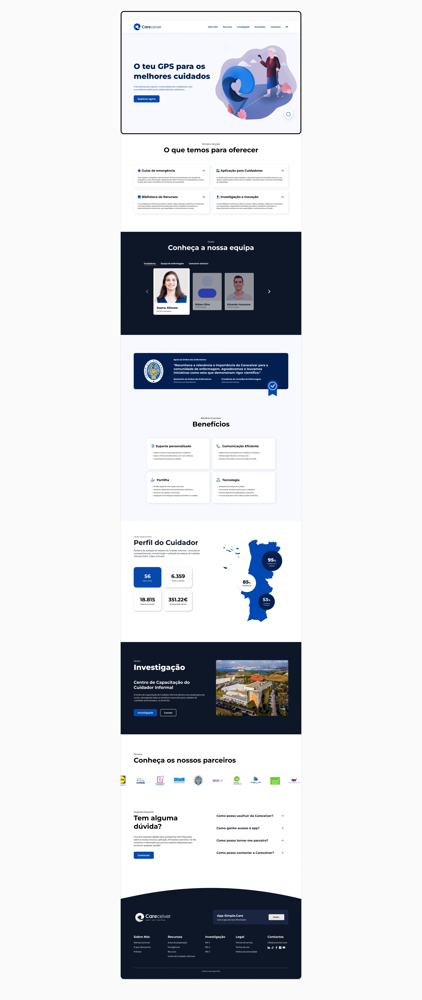
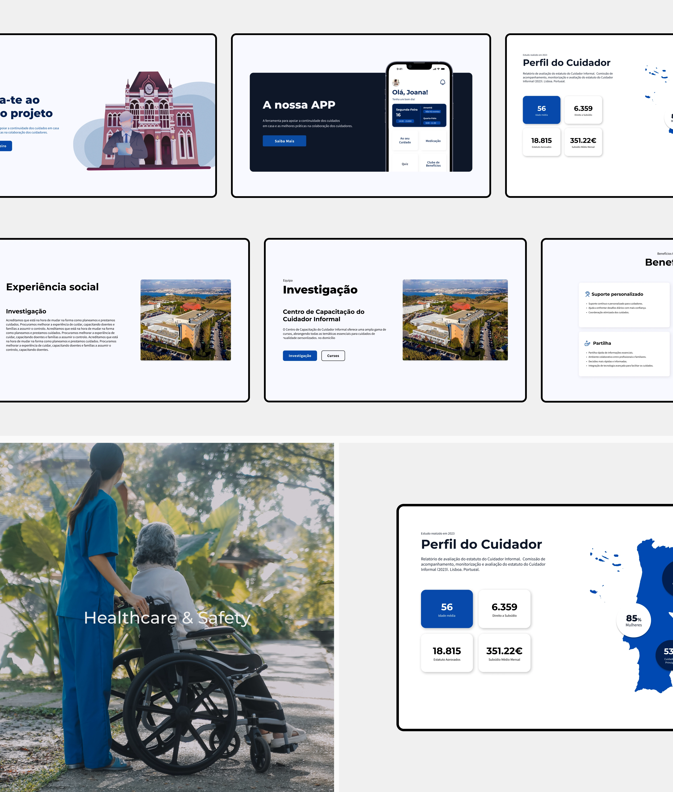

Next project
ESAD.CR Event
Mobile App Design

Careceiver is a startup focused on supporting informal caregivers. They partnered with my college to collaborate with students on a rebranding project and the design of a digital ecosystem. Due to the project’s scale, the class was divided into different departments. I was part of the UX/UI Design team, where I contributed to research, wireframing, interface design, and usability testing.
Visit website ↗
Challenge
Reimagining a user-centered
care platform
The UX phase focused on redefining the website’s architecture to eliminate confusion and improve task efficiency. Based on research insights and usability findings, we reorganized content, clarified navigation patterns, and simplified key user flows. Accessibility was a core consideration throughout this phase, ensuring improved readability, logical hierarchy, and smoother interactions across both desktop and mobile environments.

The brand
Establishing a cohesive visual system
To support the new structure, a refined visual system was developed. A consistent typographic hierarchy and color strategy were defined to enhance clarity, contrast, and overall coherence. These visual foundations ensured that the interface not only felt modern and unified but also reinforced usability and accessibility principles across the platform.

The platform
Clear and functional interface
The final UI phase focused on implementing the new UX structure and visual system into a cohesive and functional interface. Consistent components, balanced layouts, and clear interaction patterns were applied throughout the platform. Working within a multidisciplinary team, design decisions were continuously aligned with research insights, resulting in a responsive and user-centered digital experience.


Next project
Mobile App Design